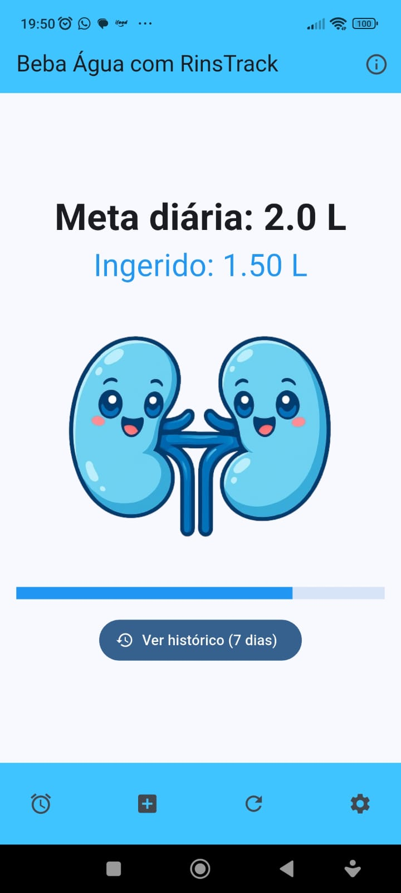
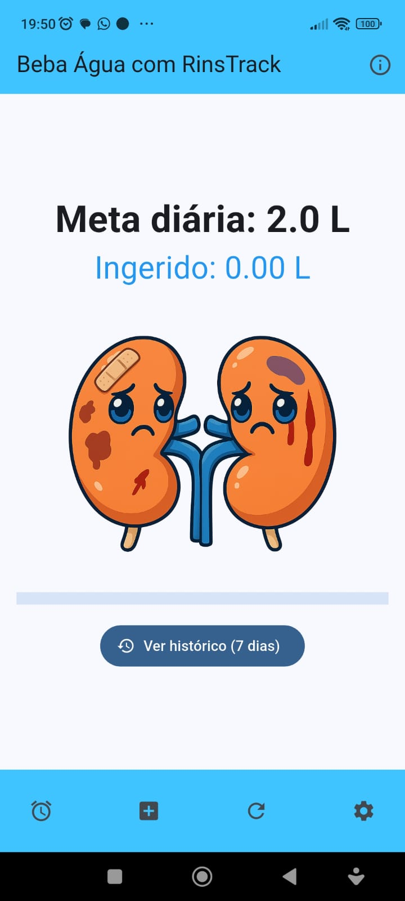
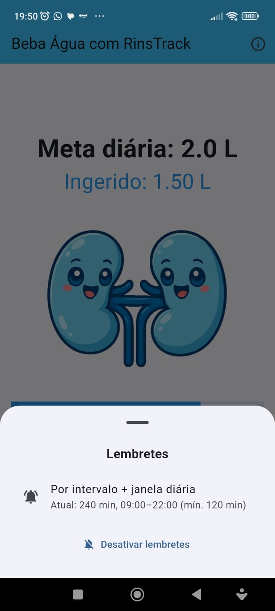
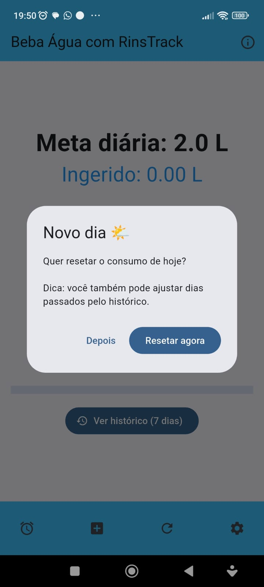
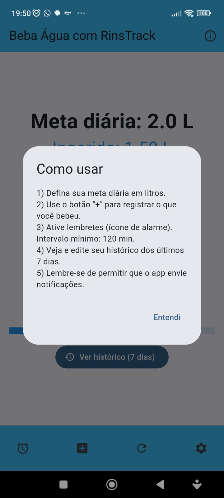

RinsTrack
Meu primeiro aplicativo publicado na Google Play. Um lembrete de hidratação simples e direto: você define a meta diária, registra o que bebeu e o app cuida de te cutucar no intervalo certo. O detalhe que dá personalidade ao app são os rins — eles ficam saudáveis e azuis conforme você bate a meta, e tristes quando o dia está zerado.
01Sobre o projeto
A ideia nasceu de um problema pessoal: eu esquecia de beber água ao longo do dia. Os apps que testei eram cheios de cadastro, assinatura e telas demais para uma tarefa que deveria levar dois toques.
O RinsTrack foi construído em Flutter com foco em simplicidade — nenhuma conta, nenhum login, tudo salvo localmente no aparelho com SharedPreferences. O trabalho técnico mais interessante ficou nas notificações locais: agendar lembretes por intervalo respeitando uma janela do dia, sem incomodar o usuário de madrugada.
O feedback visual foi a decisão de design que mais mudou o uso na prática. Em vez de só uma barra de progresso, os rins mudam de estado — é uma forma de gamificação leve que dá vontade de completar a meta.
02O que o app faz
-
Meta diária configurável
Você define quantos litros quer beber por dia e acompanha o progresso em tempo real.
-
Registro em dois toques
Botão “+” para adicionar o que bebeu, sem formulário nem navegação extra.
-
Lembretes inteligentes
Notificações por intervalo dentro de uma janela diária — nada de alerta às 3h da manhã.
-
Histórico de 7 dias
Consulta e edição dos dias anteriores, para corrigir um registro esquecido.
-
Feedback visual
Os rins ficam saudáveis conforme a meta avança e tristes quando o dia está zerado.
-
Reset diário
Ao abrir num novo dia, o app pergunta se quer zerar o consumo — sem apagar nada sem avisar.
03Capturas de tela
Registros da interface — preservados aqui mesmo que o sistema saia do ar.




